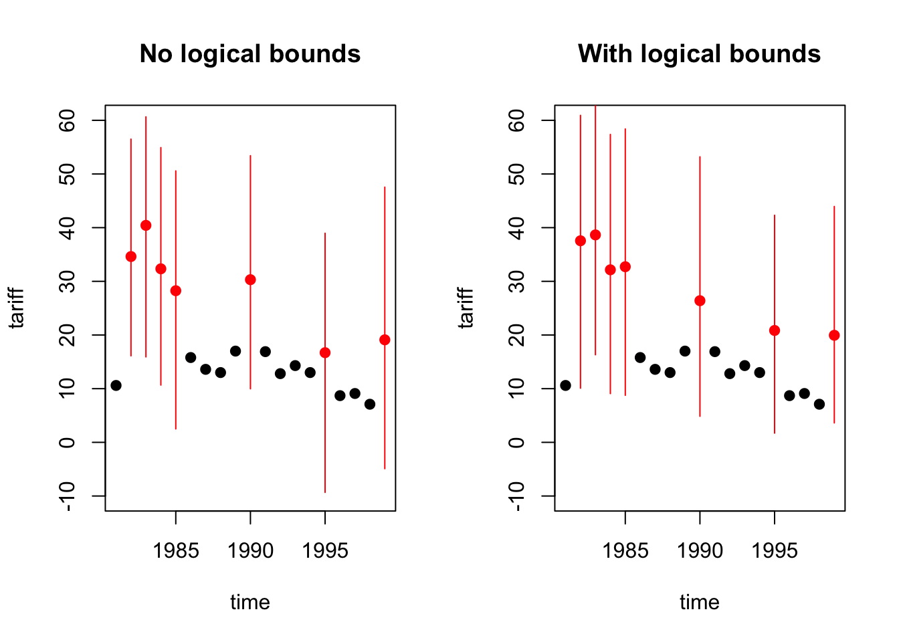

Missing Data Imputation
First, we need to load the required packages and the data.
#install.packages("Amelia")
#install.packages("VIM")
require(Amelia)
require(VIM)
data(freetrade)
summary(freetrade)## year country tariff polity
## Min. :1981 Length:171 Min. : 7.10 Min. :-8.000
## 1st Qu.:1985 Class :character 1st Qu.: 16.30 1st Qu.:-2.000
## Median :1990 Mode :character Median : 25.20 Median : 5.000
## Mean :1990 Mean : 31.65 Mean : 2.905
## 3rd Qu.:1995 3rd Qu.: 40.80 3rd Qu.: 8.000
## Max. :1999 Max. :100.00 Max. : 9.000
## NA's :58 NA's :2
## pop gdp.pc intresmi signed
## Min. : 14105080 Min. : 149.5 Min. :0.9036 Min. :0.0000
## 1st Qu.: 19676715 1st Qu.: 420.1 1st Qu.:2.2231 1st Qu.:0.0000
## Median : 52799040 Median : 814.3 Median :3.1815 Median :0.0000
## Mean :149904501 Mean : 1867.3 Mean :3.3752 Mean :0.1548
## 3rd Qu.:120888400 3rd Qu.: 2462.9 3rd Qu.:4.4063 3rd Qu.:0.0000
## Max. :997515200 Max. :12086.2 Max. :7.9346 Max. :1.0000
## NA's :13 NA's :3
## fiveop usheg
## Min. :12.30 Min. :0.2558
## 1st Qu.:12.50 1st Qu.:0.2623
## Median :12.60 Median :0.2756
## Mean :12.74 Mean :0.2764
## 3rd Qu.:13.20 3rd Qu.:0.2887
## Max. :13.20 Max. :0.3083
## NA's :18Missingness Analysis
We first need to see if the missingness is at random. To see that, we visualize the missing variables.
Missingness map plot of Amelia package visualizes the missing values of the dataset.
missmap(freetrade, rank.order = F)We could also use aggr function of VIM package to visualize both the total number of missing data in each variable and to see if they have any co-occuring missingness.
aggr(freetrade)Or we could take a look at the missingness patterns of two variables using bar charts of VIM package. Let’s assume we want to see if missingness in tariff variable has anything to do with the year variable.
barMiss(freetrade[,c("year","tariff")])##
## Click in in the left margin to switch to the previous variable or in the right margin to switch to the next variable.
## To regain use of the VIM GUI and the R console, click anywhere else in the graphics window.Looks like some years had more missing value than others. If you want to make sure that this relation is properly utilized, you may want to separate your dataset by years and impute accordingly, however while doing that you may be left with too few data in years with too many missing data.
Let’s take a look at the relation between country variable and tariff variable:
barMiss(freetrade[,c("country","tariff")])##
## Click in in the left margin to switch to the previous variable or in the right margin to switch to the next variable.
## To regain use of the VIM GUI and the R console, click anywhere else in the graphics window.The same relationship can be explored using histograms instead of bar charts for numeric variables:
histMiss(freetrade[,c("gdp.pc","tariff")])##
## Click in in the left margin to switch to the previous variable or in the right margin to switch to the next variable.
## To regain use of the VIM GUI and the R console, click anywhere else in the graphics window.In this case, there seems to be a uniform missingness of tariff values with respect to gdp.pc variable. If you look at the proportion of missing data and non-missing data, the proportion is roughly the same in each bin up to gdp.pc value 6000.
Or we can use two-variable scatter plot matrix to see the relations of all the numeric variables in one window. First we, need to subset numeric variables:
nums <- sapply(freetrade, is.numeric)
marginmatrix(freetrade[,nums])Or similarly, we could use single scatterplots of two variables:
marginplot(freetrade[,c("intresmi", "tariff")])The red numbers (58 & 13) show missing values in respective variables. The dark red number (4) tells you, how many cases were missing for both variables. The red dots show the missing points. These two variables don?t have many co-occurrences of missing cases and the missingness is quite evenly dispersed so there seems to be no relation regarding missing values. The values seem to be missing at random.
Listwise Deletion
To perform listwise deletion, we use na.omit function. This function, as the name suggests, omits the rows with NA values.
f_lw <- na.omit(freetrade)
summary(f_lw)## year country tariff polity
## Min. :1981 Length:96 Min. : 8.70 Min. :-8.00
## 1st Qu.:1986 Class :character 1st Qu.: 19.27 1st Qu.:-2.00
## Median :1990 Mode :character Median : 27.15 Median : 5.00
## Mean :1990 Mean : 33.89 Mean : 2.99
## 3rd Qu.:1993 3rd Qu.: 41.40 3rd Qu.: 8.00
## Max. :1997 Max. :100.00 Max. : 9.00
## pop gdp.pc intresmi signed
## Min. : 14105080 Min. : 149.5 Min. :0.9036 Min. :0.0000
## 1st Qu.: 21236308 1st Qu.: 445.8 1st Qu.:2.0371 1st Qu.:0.0000
## Median : 57408690 Median : 901.4 Median :3.0996 Median :0.0000
## Mean :156749853 Mean : 1893.4 Mean :3.1874 Mean :0.1875
## 3rd Qu.:114282510 3rd Qu.: 2410.2 3rd Qu.:4.3325 3rd Qu.:0.0000
## Max. :962377664 Max. :11925.3 Max. :7.9346 Max. :1.0000
## fiveop usheg
## Min. :12.30 Min. :0.2558
## 1st Qu.:12.50 1st Qu.:0.2623
## Median :12.70 Median :0.2734
## Mean :12.79 Mean :0.2730
## 3rd Qu.:13.20 3rd Qu.:0.2813
## Max. :13.20 Max. :0.2988Missing Data Imputation with Mean/Median
With this method, missing values are replaced with the mean/median of this variable. Even though this is most widely used imputation method, it is usually inappropriate due to the fact that it reduces the variance of the variable.
Our adjusted R^2 increased. Obviously those points were affecting the model.
f_mv <- freetrade
for (i in 1:ncol(f_mv)){
miss <- f_mv[,i]
if (is.numeric(miss)){
missing <- is.na(miss)
miss[missing] <- mean(miss, na.rm = T)
}
f_mv[,i]<-miss
}
summary(f_mv)## year country tariff polity
## Min. :1981 Length:171 Min. : 7.10 Min. :-8.000
## 1st Qu.:1985 Class :character 1st Qu.: 21.35 1st Qu.:-2.000
## Median :1990 Mode :character Median : 31.65 Median : 5.000
## Mean :1990 Mean : 31.65 Mean : 2.905
## 3rd Qu.:1995 3rd Qu.: 31.65 3rd Qu.: 8.000
## Max. :1999 Max. :100.00 Max. : 9.000
## pop gdp.pc intresmi signed
## Min. : 14105080 Min. : 149.5 Min. :0.9036 Min. :0.0000
## 1st Qu.: 19676715 1st Qu.: 420.1 1st Qu.:2.2681 1st Qu.:0.0000
## Median : 52799040 Median : 814.3 Median :3.2611 Median :0.0000
## Mean :149904501 Mean : 1867.3 Mean :3.3752 Mean :0.1548
## 3rd Qu.:120888400 3rd Qu.: 2462.9 3rd Qu.:4.2750 3rd Qu.:0.0000
## Max. :997515200 Max. :12086.2 Max. :7.9346 Max. :1.0000
## fiveop usheg
## Min. :12.30 Min. :0.2558
## 1st Qu.:12.50 1st Qu.:0.2623
## Median :12.70 Median :0.2756
## Mean :12.74 Mean :0.2764
## 3rd Qu.:13.20 3rd Qu.:0.2887
## Max. :13.20 Max. :0.3083Missing Data Imputation using Random Values from the Same Dataset
With this method, we replace missing values in the variable with randomly sampled non-missing values of the same variable. Even though this is an easy fix, this randomization is not an appropriate solution as it does not reflect the nature of data.
f_rv <- freetrade
for (i in 1:ncol(f_rv)){
miss <- f_rv[,i]
missing <- is.na(miss)
n.missing <- sum(missing)
miss.obs <- miss[!missing]
miss[missing]<-sample(miss.obs, n.missing, replace = T)
f_rv[,i]<-miss
}
summary(f_rv)## year country tariff polity
## Min. :1981 Length:171 Min. : 7.10 Min. :-8.00
## 1st Qu.:1985 Class :character 1st Qu.: 17.10 1st Qu.:-2.00
## Median :1990 Mode :character Median : 26.90 Median : 5.00
## Mean :1990 Mean : 32.28 Mean : 2.93
## 3rd Qu.:1995 3rd Qu.: 39.25 3rd Qu.: 8.00
## Max. :1999 Max. :100.00 Max. : 9.00
## pop gdp.pc intresmi signed
## Min. : 14105080 Min. : 149.5 Min. :0.9036 Min. :0.000
## 1st Qu.: 19676715 1st Qu.: 420.1 1st Qu.:2.2457 1st Qu.:0.000
## Median : 52799040 Median : 814.3 Median :3.2307 Median :0.000
## Mean :149904501 Mean : 1867.3 Mean :3.4505 Mean :0.152
## 3rd Qu.:120888400 3rd Qu.: 2462.9 3rd Qu.:4.4797 3rd Qu.:0.000
## Max. :997515200 Max. :12086.2 Max. :7.9346 Max. :1.000
## fiveop usheg
## Min. :12.30 Min. :0.2558
## 1st Qu.:12.50 1st Qu.:0.2623
## Median :12.60 Median :0.2756
## Mean :12.74 Mean :0.2764
## 3rd Qu.:13.20 3rd Qu.:0.2887
## Max. :13.20 Max. :0.3083Multiple Imputation: Missing Data Imputation using Amelia
Amelia assumes your data is distributed with a multivariate normal distribution and imputes values based on that assumption by bootrapping (randomly selecting and modelling) values from your data. The advantage of Amelia is that is uses the whole data to estimate your missing values. However, if your data does not have a normal distribution, you may need to transform your variables.
For instance, if the variable with missing values follows a log-normal distribution, you should use log transform of the variable for imputation. And after imputation, you need to transform it back to its original state. You can transform your variable by taking its logarithm initially and you can change it back by exponentiating after you have finished imputation.
data(freetrade)
a.out <- amelia(freetrade, m = 5, ts = "year", cs = "country",
noms = "signed", ords = "polity")## -- Imputation 1 --
##
## 1 2 3 4 5 6 7 8 9 10 11 12 13 14 15 16 17 18 19
##
## -- Imputation 2 --
##
## 1 2 3 4 5 6 7 8 9 10 11 12 13 14 15 16
##
## -- Imputation 3 --
##
## 1 2 3 4 5 6 7 8 9 10 11 12
##
## -- Imputation 4 --
##
## 1 2 3 4 5 6 7 8 9 10 11 12 13 14 15 16
##
## -- Imputation 5 --
##
## 1 2 3 4 5 6 7 8 9 10 11 12 13 14 15We have performed 5 imputations (m = 5) using Amelia. ts, stands for “time series” and it represents your time stamp variable while cs stands for “cross section” and it represents the cross sectional variable. Determining ts and cs variables tells amelia to omit those variables from imputation. noms expression stands for nominal variables while ords expression lets you state ordinal variables.
summary(a.out)##
## Amelia output with 5 imputed datasets.
## Return code: 1
## Message: Normal EM convergence.
##
## Chain Lengths:
## --------------
## Imputation 1: 19
## Imputation 2: 16
## Imputation 3: 12
## Imputation 4: 16
## Imputation 5: 15
##
## Rows after Listwise Deletion: 96
## Rows after Imputation: 171
## Patterns of missingness in the data: 8
##
## Fraction Missing for original variables:
## -----------------------------------------
##
## Fraction Missing
## year 0.00000000
## country 0.00000000
## tariff 0.33918129
## polity 0.01169591
## pop 0.00000000
## gdp.pc 0.00000000
## intresmi 0.07602339
## signed 0.01754386
## fiveop 0.10526316
## usheg 0.00000000Similarly, idvars are known as “identification variables” that are used to identify the data point in a database. For instance “SSN (social security number)” is an idvar. Amelia omits idvars from imputation but it still gives you the original values of the omitted variables in the imputed dataset.
a.out2 <- amelia(freetrade, m = 5, idvars = c("year", "country"),
noms = "signed", ords = "polity")## -- Imputation 1 --
##
## 1 2 3 4 5 6 7 8 9 10 11 12 13 14 15
##
## -- Imputation 2 --
##
## 1 2 3 4 5 6 7 8 9 10 11 12 13 14
##
## -- Imputation 3 --
##
## 1 2 3 4 5 6 7 8 9 10 11 12 13 14 15 16 17 18 19 20
## 21 22
##
## -- Imputation 4 --
##
## 1 2 3 4 5 6 7 8 9 10 11 12 13 14
##
## -- Imputation 5 --
##
## 1 2 3 4 5 6 7 8 9 10 11 12 13summary(a.out2)##
## Amelia output with 5 imputed datasets.
## Return code: 1
## Message: Normal EM convergence.
##
## Chain Lengths:
## --------------
## Imputation 1: 15
## Imputation 2: 14
## Imputation 3: 22
## Imputation 4: 14
## Imputation 5: 13
##
## Rows after Listwise Deletion: 96
## Rows after Imputation: 171
## Patterns of missingness in the data: 8
##
## Fraction Missing for original variables:
## -----------------------------------------
##
## Fraction Missing
## year 0.00000000
## country 0.00000000
## tariff 0.33918129
## polity 0.01169591
## pop 0.00000000
## gdp.pc 0.00000000
## intresmi 0.07602339
## signed 0.01754386
## fiveop 0.10526316
## usheg 0.00000000After obtaining 5 imputed datasets, we average it for the variable to obtain an average imputed dataset. I have only taken the average of tariff variable, but you need to average all imputed variables to form a complete dataset.
trf <- cbind(a.out$imputations$imp1$tariff,
a.out$imputations$imp2$tariff,
a.out$imputations$imp3$tariff,
a.out$imputations$imp4$tariff,
a.out$imputations$imp5$tariff)
tariff <- rowMeans(trf)
data(freetrade)
#You can also parallelize this using parallel = "multicore" flag.
a.out3 <- amelia(freetrade, m = 5, idvars = c("year", "country"),
noms = "signed", ords = "polity",
parallel = "multicore")## -- Imputation 1 --
##
## 1 2 3 4 5 6 7 8 9 10 11 12 13 14 15 16 17
##
## -- Imputation 2 --
##
## 1 2 3 4 5 6 7 8 9 10 11 12 13 14 15 16 17 18
##
## -- Imputation 3 --
##
## 1 2 3 4 5 6 7 8 9 10 11 12 13 14 15 16 17 18
##
## -- Imputation 4 --
##
## 1 2 3 4 5 6 7 8 9 10 11
##
## -- Imputation 5 --
##
## 1 2 3 4 5 6 7 8 9 10 11 12 13 14 15 16 17 18summary(freetrade$tariff)## Min. 1st Qu. Median Mean 3rd Qu. Max. NA's
## 7.10 16.30 25.20 31.65 40.80 100.00 58summary(tariff)## Min. 1st Qu. Median Mean 3rd Qu. Max.
## 0.9284 18.2045 27.6739 31.7686 39.5561 100.0000Single Imputation: Missing Data Imputation using Amelia
If we want to use the entire dataset for imputation instead of bootstrap EM, we can set the flag boot.type = ?none?. Since we have used the entire set, there is no point in using multiple imputation as the estimates will be the same everytime so we use m=1.
data(freetrade)
a.out.single <- amelia(freetrade, m = 1, ts = "year", cs = "country", noms = "signed", ords = "polity", boot.type = "none")## -- Imputation 1 --
##
## 1 2 3 4 5 6 7 8 9 10 11 12 13 14summary(a.out.single)##
## Amelia output with 1 imputed datasets.
## Return code: 1
## Message: Normal EM convergence.
##
## Chain Lengths:
## --------------
## Imputation 1: 14
##
## Rows after Listwise Deletion: 96
## Rows after Imputation: 171
## Patterns of missingness in the data: 8
##
## Fraction Missing for original variables:
## -----------------------------------------
##
## Fraction Missing
## year 0.00000000
## country 0.00000000
## tariff 0.33918129
## polity 0.01169591
## pop 0.00000000
## gdp.pc 0.00000000
## intresmi 0.07602339
## signed 0.01754386
## fiveop 0.10526316
## usheg 0.00000000Since we have one imputed dataset, we can simply assign this to the variable.
tariff <- a.out.single$imputations$imp1$tariff
summary(tariff)## Min. 1st Qu. Median Mean 3rd Qu. Max.
## -15.87 16.95 27.60 32.46 44.72 100.00summary(freetrade$tariff)## Min. 1st Qu. Median Mean 3rd Qu. Max. NA's
## 7.10 16.30 25.20 31.65 40.80 100.00 58Suppose that we already know that tariff values can only have a minimum value of 0 and a maximum value of 100, we can impose those limits using Amelia:
data(freetrade)
bds <- matrix(c(3, 0, 100), nrow = 1, ncol = 3) #c(variable_no, min, max)
a.out.bds <- amelia(freetrade, m = 1, ts = "year", cs = "country", noms = "signed", ords = "polity", boot.type = "none", bounds = bds)## -- Imputation 1 --
##
## 1 2 3 4 5 6 7 8 9 10 11 12 13 14summary(a.out.bds)##
## Amelia output with 1 imputed datasets.
## Return code: 1
## Message: Normal EM convergence.
##
## Chain Lengths:
## --------------
## Imputation 1: 14
##
## Rows after Listwise Deletion: 96
## Rows after Imputation: 171
## Patterns of missingness in the data: 8
##
## Fraction Missing for original variables:
## -----------------------------------------
##
## Fraction Missing
## year 0.00000000
## country 0.00000000
## tariff 0.33918129
## polity 0.01169591
## pop 0.00000000
## gdp.pc 0.00000000
## intresmi 0.07602339
## signed 0.01754386
## fiveop 0.10526316
## usheg 0.00000000Again, since we have one imputed dataset, we can simply assign this to the variable.
tariff2 <- a.out$imputations$imp1$tariff
summary(tariff)## Min. 1st Qu. Median Mean 3rd Qu. Max.
## -15.87 16.95 27.60 32.46 44.72 100.00summary(tariff)## Min. 1st Qu. Median Mean 3rd Qu. Max.
## -15.87 16.95 27.60 32.46 44.72 100.00Diagnostics
Previously, we performed imputations with and without boundary restrictions. To see if they are different from each other, let’s perform some error diagnostics on the Malaysian subset of tariff variable:
par(mfrow = c(1,2))
tscsPlot(a.out, cs = "Malaysia", main = "No logical bounds", var ="tariff", ylim = c(-10,60))
tscsPlot(a.out.bds, cs = "Malaysia", main = "With logical bounds", var ="tariff", ylim = c(-10,60))
The change in graph is visible. The red dots indicate the imputed values and the lines indicate the error margin of imputations. When we take a look at the last two imputations, the error margins are much smaller.
Let’s take a look at the densities of observed and imputed values. You need to check this for each variable that you used missing value imputation on.
par(mfrow = c(2,2))
compare.density(a.out, var = "tariff",main="Tariff density")
compare.density(a.out, var = "polity",main="Polity density")
compare.density(a.out, var = "intresmi",main="Intresmi density")
compare.density(a.out, var = "fiveop",main="Fiveop density")The imputations we performed seem to have captured the general behavior of the variable with some deviation. We need to perform overimputation to see if the imputed values for the variables are acceptable.
Overimputation:
par(mfrow = c(2,2))
overimpute(a.out, var = "tariff",main="Tariff Overimputation")
overimpute(a.out, var = "polity",main="Polity Overimputation")
overimpute(a.out, var = "intresmi",main="Intresmi Overimputation")
overimpute(a.out, var = "fiveop",main="Fiveop Overimputation")
In an overimputation graph, the mean imputations are given as dots and the vertical lines of dots represent the 90% confidence interval of that imputation. The black colored orthagonal line is the diagnostics line. If the mean imputation or the 90% confidence interval line of imputation overlaps with the diagnostics line, this means the imputation is within acceptable range and it can be used. If most of the imputations are acceptable, then the dataset can be used. The color of the line (as coded in the legend) represents the fraction of missing observations in the pattern of missingness for that observation.